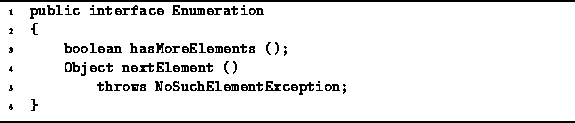

Data Structures and Algorithms
with Object-Oriented Design Patterns in Java
Data Structures and Algorithms
with Object-Oriented Design Patterns in Java
In this section we introduce an abstraction called an enumeration.
An enumeration provides the means to access one-by-one all the
objects in a container.
Enumerations are an alternative to using the visitors
described in Section  .
.
The Container interface given in Program
has a method called getEnumeration which returns an Enumeration.
The basic idea is that for every concrete container class
we will also implement a related class
that implements the Enumeration interface.
Program defines the Enumeration interface .
The interface comprises two methods--hasMoreElements and nextElement.
.
The interface comprises two methods--hasMoreElements and nextElement.

Program: Enumeration interface.
In order to understand the desired semantics, it is best to consider first an example which illustrates the use of an enumeration. Consider a concrete container class, say SomeContainer, that implements the Container interface. The following code fragment illustrates the use of the enumeration to access one-by-one the objects contained in the container:
Container c = new SomeContainer ();
// ...
Enumeration e = c.getEnumeration ();
while (e.hasMoreElements ())
{
Object object = e.nextElement ();
System.out.println (object);
}
In order to have the desired effect, the methods hasMoreElements and nextElement must have the following behaviors:
One of the advantages of using an enumeration object which is separate from the container is that it is possible then to have more than one enumeration associated with a given container. This provides greater flexibility than possible using a visitor, since only one visitor can be accepted by a container at any given time. For example, consider the following code fragment:
Container c = new SomeContainer ();
// ...
Enumeration e1 = c.getEnumeration ();
while (e1.hasMoreElements ())
{
Object obj1 = e1.nextElement ();
Enumeration e2 = c.getEnumeration ();
while (e2.hasMoreElements ())
{
Object obj2 = e2.nextElement ();
if (obj1.equals (obj2))
System.out.println (obj1 + "=" + obj2);
}
}
This code compares all pairs of objects in the container c
and prints out those which are equal.
A certain amount of care is required when defining and using enumerations. In order to simplify the implementation of enumerations, we shall assume that while an enumeration is in use, the associated container will not be modified.
 Copyright © 1998 by Bruno R. Preiss, P.Eng. All rights reserved.
Copyright © 1998 by Bruno R. Preiss, P.Eng. All rights reserved.